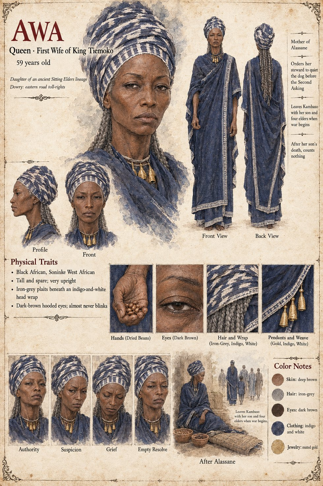

Awa
Queen, first wife of King Tiemoko · daughter of an ancient lineage of the Sitting Elders · keeps two bowls of beans · 59 years old on her sheet
The first wife, the daughter of one of the Sitting Elders' oldest lineages, married to Tiemoko while he was still a prince, who brings to the marriage a dowry of toll-rights on the eastern road and a temperament the palace describes, with careful neutrality, as exacting. She sits up with her son Alassane through the nightmares of his eighth year, counting his breaths in the dark, because she kept accounts even of that. When Binta's son Sekou breaks his arm at twelve she sends her own bone-setter across the palace at a run, unasked, with instructions to spare nothing: the last uncalculated kindness she would ever do anyone outside her own blood. The beer-house of Chapter Seven says she feeds the dog from her own hand every ninth day for luck, which is false. Her own ledger is two bowls of dried beans beside her sleeping-mat, one for what she is owed and one for what she owes, moved from one to the other every night for forty years and never mentioned to anyone. On the night of the Weighing she does not touch them: The columns were perfectly clear.
The first column is long: the eastern toll-rights to the gold-weighers' guild within the year, four of the twelve stools to lineages that never forgave her family for holding them, her brothers' posts at the salt-toll to Binta's nephews, and herself pensioned. The second is the boy. A defeated candidate is not killed in Danjeri; he was permitted to go on, which was the crueler of the two outcomes. She tells Alassane that there remains the Second Asking, which is his by right, and that You will be asked to stand in a court and let an animal look at you; she takes his face in both hands and says that he will not be pitied, he will be pensioned. She was not a wicked woman, the manuscript says, and the histories, which needed her to be, would have to work at it. She tells her steward Kassa to see that the animal is quiet on the day, and never once says the word for what she has asked. At the Second Asking she watches from the gallery as the dog looks at her son, sees the bright dark eyes, and understands that she has failed before she understands why.
On the second night of the war she leaves by the eastern gate in a closed litter with Alassane, her steward and four of the twelve elders, the toll-houses of the eastern road already in her pocket. When Alassane is killed in the shallows she is found beside the body, making a low continuous sound with no words in it and counting his breaths, and it was not grief as the songs have it. It was a mechanism failing. Both bowls are overturned and she cannot tell which beans were owed and which paid. The trial is dropped in the peace; she is permitted to live out her days in the house she has been given, where she counted nothing at all and was said, in the last years, to speak of her son as though he were in the next room.
The manuscript gives her lineage, dowry, temperament and beans; it gives no age, face or build, and it has her stop blinking for one long moment at the Weighing, which implies that she ordinarily does. The sheet's age of 59, tall, spare, very upright frame, iron-grey plaits under an indigo-and-white head wrap, dark-brown hooded eyes that almost never blink, gold pendants and indigo-and-white dress are its own, as are its panels Authority, Suspicion, Grief and Empty Resolve and its scenes After Alassane and Leaves Kambaso with her son and four elders when war begins.
“You will be asked to stand in a court and let an animal look at you.”